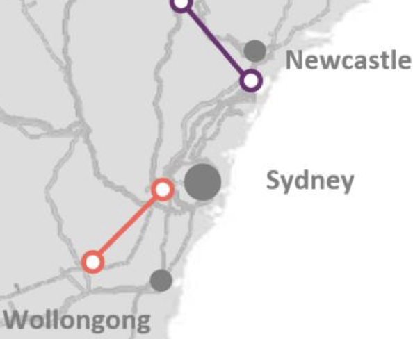

Transmission, social license and easements
This note started out as a narrow piece on landholder access value. However its grown to comment on the value of transmission, the relative value of individual projects and the in my opinion, improper use of inherently inaccurate RIT NPV models to drive decisions instead of using them to facilitate decisions and improve understanding.
The ISP is at its heart more than a transmission planning tool, it is a synthesis of policies adopted by Australian Goverments, Federal (zero added value) and State to show how those policies can be brought together to decarbonise the NEM and hold electricity prices steady. Even so although the ISP recognises the need for social license, it isn’t modelled. Nor does it explicitly model electricity prices and therefore competition impacts that an integrated NEM provides. Nevertheless it rises above being “just an NPV model” because of the vision it presents. And because of the seemingly simply but actually highly democratic “Delphi” process its clear its been able to sell that vision to a majority of stakeholders. The sale of that vision is the “capstone” of the social license required and the consequences.
If we are going to reconfigure the NEM some transmission will need to be built. Arguments over the merits or demerits of individual transmission projects cannot escape this central point. Some old transmission may lose value. The key evidence today that more transmission between NSW and Victoria is needed is a forecast $40-$50/MWh price difference out to June 2025 at least.
{kind=link}
Figure 1 Baseload futures. Source: NEM Review
ITK doesn’t expect that difference to be alleviated until project EnergyConnect [PEC] is completed or until there is more supply from within NSW. As I understand it other than the Waratah battery there is no prospect of alleviating the Vic to NSW bottleneck until VNI West is built around 2030 or just after.
Indeed as modelled in the draft 2020 ISP, Vic-NSW alleviation is seen as relatively low benefit compared to other actionable projects. From a current price and conditions perspective its tempting to argue that VNI West is actually the most important project, but that is probably a short term view.

Figure 2 Actionable ISP projects ranked by net benefit. Source: AEMO
{kind=link}
NSW and Victorian price differences seem entrenched for years
Futures prices in NSW and QLD continue to rise.

Figure 4 Futures. Source: Global Roam
However it’s the difference between Victoria and NSW that’s of interest here, given that these are the two States that nominally are the most linked by transmission.
| Futures prices, the great divide | |||
|---|---|---|---|
| $/MWh | FY23 | FY24 | FY25 |
| NSW | 108 | 101 | 91 |
| VIC | 60 | 52 | 50 |
| Difference | 49 | 49 | 40 |
Figure 5 Source: Global Roam
During calendar 2021 average net Vic to NSW flow was 385 MW and didn’t rise above 500 MW even when the peak evening price differential averaged over $120/MWh.
If NSW pool price in 2023 was the same as in Victoria the NSW pool revenue would be $4 bn lower, or over 3 years that’s $12 bn. And even a little more flow might lower prices in NSW.
| $10 bn of revenue unfairly split in FY23 | ||||||
|---|---|---|---|---|---|---|
| Price | Demand | Pool revenue | ||||
| $/MWh | TWh | $m | ||||
| NSW | 108 | 66 | 7149 | |||
| Vic | 60 | 42 | 2503 |
Figure 6 Pool revenue FY23. Source: Nem Review
AEMO’s Transmission cost report 2021 puts the blame squarely in Victoria’s side of things where transfer capacity from Victoria to Southern NSW is limited to 870 MW at peak at best. The problem with this is, unless I’ve missed something, its not due to be fixed until VNI West is built, if its built. NSW gets no relief until transmission from South Australia arrives or more local supply is commissioned. Transmission from South Australi will run into a bottleneck at Wagga which is where Humelink comes in.
| Victoria and NSW existing limits and a ugmentation options | |||
|---|---|---|---|
| Zone | Existing limit MW | Aug mentation | Map |
| Central NSW to Sydney, Newcastle Wollongong | 6125 | Northern 500 kv loop cost $1 bn | {wi dth=“1.2013188976377953in” heig ht=“0.9869422572178478in”} |
| Southern to Central NSW | 2700 | Humelink $3.3 bn Or HVDC wagga to “bannaby” $2 bn |
 {wi dth=“2.5622430008748904in” heig ht=“1.0706310148731408in”} {wi dth=“2.5622430008748904in” heig ht=“1.0706310148731408in”} |
| Vic to Southern NSW | 870 | VNI west in some form cost $3.0 bn |  {wi dth=“2.5554451006124235in” heig ht=“1.2731889763779527in”} {wi dth=“2.5554451006124235in” heig ht=“1.2731889763779527in”} |
Figure 7 Transmission capacity by stage Vic to Sydney. Source: AEMO
Eraring sharpens the NSW net importer focus
One thing the closure of Eraring does is to heighten NSW’s historic status as a net electricity importer, that is demand is higher than production with energy being imported from Queensland and NSW.
The NSW Electricity roadmap will, if fully executed, likely make demand and supply more in balance but in 2022, 2030 is still a long way off.
The NSW transmission augmentation schedule looks as follows:

Figure 8 NSW network augmentation, Source: AEMO Services
And the broader context is shown in the map below.
{kind=link}
Figure 9 Transmission development in NSW, VIC, QLD. Source: draft ISP 2022
RIT tests are nonsense, they obscure the basic questions behind complex unverifiable scenarios.
The traditional regulatory test for consumer paid transmission called the RIT-T is theoretically perfect enough to satisfy even John Pierce. In practice though it’s a load of old cobblers. In reality by the time the RIT is undertaken the decision to build the transmission capacity has already been taken. It is just a discussion of the appropriate route and the electrical characteristics of the link. And that is more a technical than economic discussion. In the case of Humelink a 5% difference in NPVs is regarded as sufficiently material to justify one route choice over another. This is frankly humorous.. HVDC was dismissed as 50%-100% more expensive in the PADR. 50% to 100%? In AEMO’s transmission cost database, HVDC for Humelink looks quite good on a cost basis, although the “benefits” aren’t modelled.
Complex NPV models used to justify one transmission route over another that attempt to predict over 20 or 30 or 40 years what generation mix will be built if one transmission link is built or not built completely hide the forest for the trees. Costs and benefits and costs to consumers are important but financial models aren’t meant to be used deterministically. NPV models generally have wide margins of error at the best of times and are a decision input not the be all and end all.
Its good judgement that drives good decisions, not easily manipulated, difficult to verify NPV models about future fuel mixes that are out of date before they are even published. How does one know what a good judgement is? Well there’s the rub of it.
The ISP is the primary decision input into what transmission is needed and the order in which it should be built. It is a fair point to be made, as Bruce Mountain and Ted Woodley make at every opportunity that the ISP takes a set of State and Federal policies as inputs and then works out a solution. Certainly Snowy 2 should have been modelled simultaneously with the ISP, but that is now irrelevant. Similarly if Queensland Govt eventually decides that actions matter more than words and stops trying to pretend it can simultaneously decarbonise , meet its renewable energy targets and keep coal generation open then it may build new transmission and the ISP will adapt to include that external decision.
Humelink and the RIT
Over the next few years the main transmission increase in NSW will come from EnergyConnect [SA to Wagga NSW] and then in moving the supply from Wagga through to Sydney its “Humelink”. Humelink at $3.3 bn is basically the same cost as both stages of Marinus Link ($3.5 bn).
Figure 10 Humelink 3C showing Wagga and Snowy legs. Source: Transgrid
Humelink was required to be justified using an RIT-T [Regulatory Investment Test]. The potential owner of the transmission [Transgrid in this case] looks at the investment case for the transmission line and creates a Net present value [NPV] model which compares generation costs and sometimes competition with the transmission against what the modeller thinks will happen without it. Then the Australian Energy Regulator [AER] considers the model and takes submissions. If the model has a positive NPV and its more positive than other options modelled by the proponent then the AER gives it a conditional tick.
ITK thinks that the models for most of this transmission have little or no chance of being correct, in the sense that outcomes and counterfactuals in the real world will not correspond to the modelled outcomes, and more importantly are totally besides the real point. Consider project EnergyConnect. Its NPV model assumed that all the gas generators in South Australia would shut down the day EnergyConnect opened. That’s clearly just a “modelling assumption”. The fact that is obviously not going to happen doesn’t invalidate or validate the case for connecting South Australia to NSW.
So it is with Humelink where the NPV is created by a model that shows avoided fuel costs and avoided investment if Humelink is built. It’s a model with many assumptions about events far into the future which is more or less incapbable of being assessed by anyone other than the model builder. The truth of most big NPV models is that very few people will ever learn how they actually work, the fudges, plugs and modelling assumptions that are required usually means that only the one or two peple that build the model can keep it running and do the sensitivies. And, in ITK’s opinion the models hide the forest for the trees. What does it really matter if there is less solar and more wind if Humelink is built? The real, and pretty much only relevant question is whether the NSW needs the extra capacity that Humelink provides. For instance will the Energy Connect capacity be stranded at Wagga without Humelink? Will Snowy capacity be available without Humelink? If Snowy is hogging the transmission can Energyconnect still be useful?
The Humelink Project Assessment Conclusion Report [PACR] was prepared before the draft 2022 ISP was released but under the 2020 version of “stepchange” it had “net benefits” of $0.6 bn.. The PACR states:
- “these benefits are found to be most significant around the time large black coal generators are expected to retire and are initially driven by an increased utilisation of Snowy 2.0 and changes in capacity mix that result in the avoidance of LS battery build in New South Wales from 2026/27”
And one can almost hear Bruce Mountain and Ted Woolley immediately jumping up and down and banging the drum about why isn’t Snowy paying if it is getting the benefit. I would make a slightly different point which is its already clear the batteries are going to get built anyway.
In fact about 1800 MW of utility scale battery is already confirmed for NSW, equal to 90% of the power that Snowy 2 will be capable of and all of it will be built long before Snowy 2 is up and running. Duration though will be short. More batteries and eventually pumped hydro are coming. Residential batteries grow steadily, vehicle to the grid etc. The batteries don’t invalidate Humelink because the reality is that NSW needs Humelink even though it’s a fairly marginal project.
| Confirmed NSW batteries | ||
|---|---|---|
| MW | MWh | |
| Project Waratah | 700 | 1400 |
| Liddell | 500 | |
| Eraring Stage 1 | 400 | |
| Darlington Point | 100 | 200 |
| Canberra | 100 | 200 |
| Total | 1800 |
Figure 11 Confirmed NSW batteries. Source: Company announcements
Notwithstanding my respect for EY’s modelling the change in generation output by fuel they forecast compared to the no Humelink scenario is not particularly intuitive..

Figure 12 Humelink benefits. Source: Transgrid PACR addendum
But hands up if this graph convinces you that Humelink is a good or a bad idea?
There are an infinite number of alternative future paths other than what is modelled. That’s not to invalidate the model or to under estimate its usefulness. In my opinion though it shouldn’t be the sole driver of whether to build Humelink or which route it should take or the configuration. And as we will get to the model has no explicit allowance for carbon or for social license. In this sense it’s a giant well intentioned furphy.
Transmission provides diversity, insurance and competition
A strong transmission backbone in the NEM increases the resilience of the NEM by reducing dependence on local sources of power and energy. It also makes the NEM fairer by increasing inter regional competition. The history of the NEM shows that when the NSW and Victorian markets were brought together in the original Hilmer/Coag reforms of the early 1990s that NSW and Victorian coal generators competed strongly against each other to the benefit of consumers and the detriment of generators.
In a different world NSW could build lots of batteries and pumped hydro and have less interstate transmission capability. ITK believes that such an outcome would likely eventually lead to a few big players running the NSW market to consumers detriment. Of course that can happen NEM wide but the bigger the market the harder it is for an oligopoly to emerge.
Transmission provides both capacity and energy. In that sense its dispatchable power.
Transmission is a relatively minor part of electricity costs, the costs to consumers of over building transmission are minor
The draft ISP summarises the overall picture for transmission development in the NEM as follows:
| Net benefits of ISP | |
|---|---|
| $bn | |
| Generation and storage deferral | 19.5 |
| FOM cost savings | 2.8 |
| fuel cost savings | 15.2 |
| Other | 0.2 |
| Gross benefits | 37.7 |
| Transmission and augmentation costs | -12.2 |
| Total net benefit | 25.5 |
Figure 13 ISP transmission net benefit. Source: AEMO
If the transmission isn’t built but coal generation retirements happen anyway, then its argued in the ISP there is a need for much more local wind, solar and firming generation to be built and then post 2030 lots more gas.
New England REZ, Sydney ring and Marinus Link add the most value
The results from the draft ISP show that Humelink and VNI West have lower benefit to cost ratios than other actionable projects. We calculated gross benefits as the net benefit, as disclosed in the ISP less costs. The Sydney Ring cost is an average of North and South options but it will either be one or the other. Marinus Link provides surprisingly high benefits. It has the second highest benefit to cost ratio and the highest absolute gross benefits. That was not the result I was expecting. And it is not one that Snowy management would agree with. Snowy disagrees that wind in Tasmania adds value in the way the ISP models things.
One might also imagine that despite what Bob Brown and his cheer squad say the overall social license cost for Marinus Link is low relative to VNI West and Humelink. Most of the project is under water and until it breaks ,out of mind.
| Transmission project contribution to NPV | |||||
|---|---|---|---|---|---|
| Gross benefits | Costs | Ratio | Benefits | % total | |
| New England REZ link | 7.4 | 1.9 | 3.9 | 5.5 | 19% |
| Marinus Link | 8.1 | 3.5 | 2.3 | 4.6 | 16% |
| Sydney Ring | 5.1 | 1.7 | 3.0 | 3.4 | 12% |
| VNI West | 4.8 | 2.9 | 1.7 | 1.9 | 6% |
| Humelink | 4.6 | 3.3 | 1.4 | 1.3 | 4% |
| Commited projects | 16.7 | 57% | |||
| Commited and future projects | 12.7 | 43% | |||
| Total | 29.4 | 100% |
Figure 14 Transmission project estimated contribution to ISP benefits. Source: AEMO
From the point of view of social license its arguably materially more difficult to build lots more of everything except transmission than it is to build the required transmission. Lots more disruption to many more people from the no transmission case. More gas generation will mean more gas field development. Again all of this may not come true but in my view its plausible enough. Guaranteeing the reliability of any one State is likely to take a lot more redundancy if done with local resources only as compared to the case of being able to bring in other States as needed. The first rule of portfolios is basically that the more diversified the lower the variance of the return.
Equally we can roughly look at the annual cost relative to current final costs paid by consumers
| Final electricity market 2022 | ||||
|---|---|---|---|---|
| Residential | Business | Total | ||
| Consumption | TWh | 37 | 143 | 180 |
| final price | $/MWh | 280 | 120 | 153 |
| Revenue | $bn | 10 | 17 | 28 |
| ISP transmission annual cost | $bn | 1 | ||
| 3.8% | ||||
| ISP transmission | ||||
| Investment | $bn | 15 | ||
| WACC | 7% | |||
| Annual cost | $bn | 1.05 | ||
| Unit cost | $/MWh | 6 |
Figure 15 Transmission and final bills. Source: ITK, AEMO
Social license, requires a license fee
Australia has a fundamentally divisive regime that divides property, mineral resources and access rights between the State, the land owner and the utility.
Broadly: Mineral rights below ground belong to the crown. People wishing to extract mineral rights obtain licensees from the crown and then have a right of access to the land subject to paying access costs. But look at the coal seam gas [CSG] experience to notice how this doesn’t always make landowners happy and the industry evolved so that landowners get significant additional payments and in some cases the CSG developer bought the underlying property. Note that the QLD CSG industry is fully electrified and this requires gas and power lines laid in trenches right across the impacted area. Its actually a text book example of how to do it with minimal environmental impact but lets not go there. In fact from a visual perspective, and I speak from personal experience, it’s the electricity transmission that is the most visually intrusive element.
By contrast wind and solar farm developers have no natural rights to the land on which they seek to locate their wind turbines and or solar panels and so they must negotiate land rental fees. Over time and in order to improve social license additional fees have often come to be paid to land owners that feel they are impacted even if the wind turbine is not located on their property. In addition there are community funds and similar.
Finally electricity transmission access is granted by way of easement:
“An easement is the right to enter or use a section of land for a particular purpose by someone who is not the land owner.
Transmission line easements can generally be defined as the lots of land on which transmission overhead and underground lines are built and include a buffer area to ensure the safe and secure operation of the lines.”
The extent of transmission easement width wise is shown below although the left most tower doesn’t make much intuitive sense to me.:
Figure 16 Transmission easements. Source: Transgrid
The easement process is either a negotiated outcome based on the value of the land or if that fails it can be compulsorily acquired under the terms of the “Just Terms Act” with the valuation determined by the valuer general in NSW or ultimately by the Land and Environment Court. In the case of Humelink we are talking about 500 kv double circuit.
Contemporary compensation comparison
How does the compensation between wind farms and transmission compare. In terms of the bargaining power in the case of the wind farm its kind of equal but the land owner can refuse point blank. In the case of the easement the transmission operator has all the bargaining power, its only a question of what the land owner can negotiate.
Windfarms
ITK understands that the going rate for wind farms is about $6k/MW so for a 5 MW or 6 MW turbine that’s $30k per year. And so for say Bango WF of 46x5.3 MW turbines that’s about $1.4 m and we could add in a bit for the transmission from the wind farm to the grid so say $1.5 m per year. Then we need to add in the community enhancement fund of $130 k per year. So from the wind farm’s perspective the annual cost is $1.63 m per year. If I use a 7.5% discount rate and ignore tax then the present value is about $19 m which works to maybe 3.5% of the cost of the wind farm. Per wind tower the NPV is about $350K (present value of $30k per year for 25 years @ 7.5% discount rate). From the landowner’s perspective one can either look at the direct land use or the total land use. According to NREL the direct land use is about 0.75 acres/MW. That is the area occupied by turbines, access roads, substations and the like. Because turbines are often located on hills the total land area consumed can be larger. However the broader point of view is that such land is inherently less valuable. For this reason the sums I do take the direct land use.
Also of note is that the land owner still owns the land, and will get it back after 25 years, unless a new lease is negotiated. Agricultural activity will be possible on the windfarm, but the height of the tower at 120 metres is 70% more than a 500 kv double circuit transmission tower..
From a financial analyst perspective the land rental cost works $2.20/MWh or maybe 1/6 of total annual operating costs. Ok.
Transmission
Humelink is not yet up to acquiring easements but from the PACR we can see that about $91 m has been estimated for land easements. This works to $250k per linear km but only 70 metres wide. There are about 2.5 towers per km, so around $100 k per tower. That is a one off cost as opposed to the annual payment made to the wind farmer.
Wind farms per sq metre of land are paid perhaps 6x what transmission gets
I have tried to convert the wind farm and transmission payments into the price paid to permanently acquire the land expressed in $/M2
Figure 17 Comparing land costs. Source: ITK
Easements costs are low relative to total costs
For Humelink Transgrid estimates the easement cost at $90-$100 m out of a total cost of $3.3 bn.